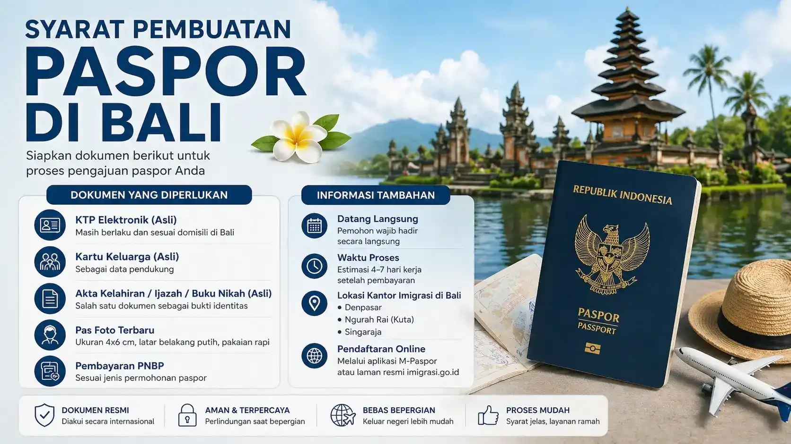

Ingin membuat paspor di Bali dengan proses yang lebih jelas, terarah, dan mudah dipahami?
Banyak orang mengira membuat paspor itu rumit dan memakan waktu lama. Padahal, jika Anda memahami alur, syarat, dan prosesnya dengan benar, pengurusan paspor bisa dilakukan dengan lebih cepat, efisien, dan minim kendala. Artikel ini akan membahas secara lengkap mulai dari syarat, proses, hingga tips agar pengurusan paspor Anda berjalan lancar.

Paspor adalah dokumen resmi yang dikeluarkan oleh imigrasi sebagai identitas perjalanan internasional. Dokumen ini wajib dimiliki oleh setiap warga negara yang ingin bepergian ke luar negeri.
Selain sebagai identitas, paspor juga menjadi syarat utama untuk pengajuan visa, perjalanan wisata, studi, maupun keperluan kerja di luar negeri.
Berikut dokumen yang perlu disiapkan:
| Jenis | Keterangan |
|---|---|
| Paspor Biasa | Digunakan untuk perjalanan umum |
| e-Paspor | Memiliki chip elektronik |
| Wilayah | Keyword SEO |
|---|---|
| Denpasar Selatan | Pembuatan paspor Denpasar Selatan |
| Kuta | Pembuatan paspor Kuta |
| Canggu | Pembuatan paspor Canggu |
| Ubud | Pembuatan paspor Ubud |
| Sanur | Pembuatan paspor Sanur |
Jika Anda ingin proses yang lebih cepat dan tidak membingungkan, Anda dapat menggunakan layanan dari Rizch Service yang siap membantu pengurusan paspor secara profesional.
Dengan pendampingan yang tepat, Anda bisa menghemat waktu, menghindari kesalahan, dan memastikan proses berjalan lancar.
Umumnya beberapa hari kerja tergantung antrean.
Ya, untuk wawancara dan foto.
Bisa jika proses dilakukan dengan benar.
Dokumen tidak lengkap atau data tidak sesuai.
← Lihat Artikel Lainnya Konsultasi Gratis